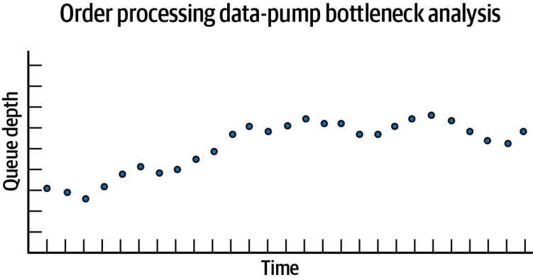

فصل ۱۶: سبک معماری مبتنی بر فضا (ادامه — بستهٔ ۶۵)
ریسکهای رایج (ادامه)
برخوردهای داده
برخورد داده (data collision) زمانی رخ میدهد که دادهای در یک نمونهٔ کش (کش A) بهروز شود و در جریان تکثیرش به نمونهٔ کشِ دیگری (کش B)، همان داده در آن کش (کش B) نیز بهروز شود. این وضعیت ممکن است هنگام استفاده از کشگذاری تکثیری در حالت فعال/فعال (active/active) پیش آید؛ یعنی حالتی که چندین واحد پردازش میتوانند همزمان یک دادهٔ واحد را بهروز کنند. برخوردها معمولاً زمانی رخ میدهند که نرخ بهروزرسانیِ (update rate) دادهها در کش از تأخیر تکثیر (replication latency یا RL) فراتر رود؛ یعنی از زمانی که همگامسازیِ هر کشِ همنام طول میکشد. در این سناریو، بهروزرسانیِ محلیِ کش B با دادهٔ قدیمیِ کش A بازنویسی میشود و همان داده در کش A نیز با بهروزرسانیِ کش B بازنویسی میشود. در نتیجه دادههای هر کش ناسازگار میشوند.
برای نشاندادنِ مسئلهٔ برخورد داده، فرض کنید دو نمونه از یک سرویس ثبت سفارش (A و B) وجود دارد که هر یک کشی تکثیری از موجودیِ محصول (ابزارکهای آبی) دارند. جریان کار به این صورت است:
شمار موجودیِ فعلی در هر یک از نمونههای A و B برابر با ۵۰۰ واحد است.
نمونهٔ A درخواستی از یک مشتری برای خرید ۱۰ واحد دریافت میکند و کش موجودیِ ابزارکهای آبی را به ۴۹۰ واحد بهروز میکند.
پیش از آنکه دادههای نمونهٔ A به نمونهٔ B تکثیر شود، نمونهٔ B درخواست خریدی برای ۵ واحد دریافت میکند و کش موجودیِ ابزارکهای آبی را به ۴۹۵ واحد بهروز میکند.
کش نمونهٔ B بر اثر تکثیرِ بهروزرسانیِ نمونهٔ A به ۴۹۰ واحد بهروز میشود.
کش نمونهٔ A بر اثر تکثیرِ بهروزرسانیِ نمونهٔ B به ۴۹۵ واحد بهروز میشود.
هر دو کش نادرست و ناهمگاماند: موجودی باید در هر دو نمونه ۴۸۵ واحد باشد.
عوامل متعددی بر شمار برخوردهای دادهای که ممکن است رخ دهد اثر میگذارند: شمار نمونههای واحد پردازش که کش یکسانی دارند، نرخ بهروزرسانیِ کش، اندازهٔ کش و RLِ محصول کشگذاری. میتوانیم بر پایهٔ این عوامل و با استفاده از فرمول زیر، بهصورت احتمالاتی تعیین کنیم چند برخورد دادهٔ بالقوه ممکن است رخ دهد:
\text{CollisionRate} = N \times \frac{UR^2}{S} \times RL
در اینجا $N$ نمایندهٔ شمار نمونههای سرویس است که از کش همنام یکسانی استفاده میکنند. $UR$ نمایندهٔ نرخ بهروزرسانی بر حسب میلیثانیه (به توان دو) است، $S$ اندازهٔ کش (بر حسب شمار سطرها) است و $RL$ تأخیر تکثیرِ محصول کشگذاری (بر حسب میلیثانیه) است.
این فرمول برای تعیینِ درصد برخوردهای دادهای که احتمالاً بر پایهٔ بهروزرسانیها در یک بازهٔ زمانیِ مشخص (مثلاً هر ساعت) رخ خواهند داد، و در نتیجه برای سنجیدنِ امکانپذیریِ استفاده از کشگذاری تکثیری در این سیستم، سودمند است. برای نمونه، مقادیر نشاندادهشده در جدول ۱۶-۲ را برای عوامل دخیل در این محاسبه در نظر بگیرید.
جدول ۱۶-۲. مقادیر پایه
عامل
مقدار
نرخ بهروزرسانی (UR):
۲۰ بهروزرسانی در ثانیه
شمار نمونهها (N):
۵
اندازهٔ کش (S):
۵۰٬۰۰۰ سطر
تأخیر تکثیر (RL):
۱۰۰ میلیثانیه
بهروزرسانیها:
۷۲٬۰۰۰ در ساعت
نرخ برخورد (collision rate):
۱۴٫۴ در ساعت
درصد:
۰٫۰۲٪
اعمال این عوامل در فرمول ۷۲٬۰۰۰ بهروزرسانی در ساعت به دست میدهد، با احتمال بالای اینکه ۱۴ بهروزرسانی روی دادهٔ یکسان با هم برخورد کنند. با توجه به درصد پایین (۰٫۰۲٪)، تکثیر گزینهٔ کارآمدی خواهد بود.
تغییرات RL میتواند اثر چشمگیری بر سازگاری داده داشته باشد. تأخیر تکثیر به عوامل فراوانی بستگی دارد، از جمله نوع شبکه و فاصلهٔ فیزیکی میان واحدهای پردازش. مقادیر RL باید از اندازهگیریهای واقعی در محیط تولید محاسبه و استخراج شوند و به همین دلیل بهندرت منتشر میشوند. اگر RLِ واقعی در دسترس نباشد، مقدار ۱۰۰ میلیثانیه که در مثال پیشین به کار رفت عدد خوبی برای برنامهریزی است. برای نمونه، تغییر RL از ۱۰۰ میلیثانیه به ۱ میلیثانیه همان شمار بهروزرسانیها (۷۲٬۰۰۰ در ساعت) را به دست میدهد، اما احتمال رخدادنِ برخورد را بسیار پایینتر میآورد (۰٫۱ برخورد در ساعت). این سناریو در جدول ۱۶-۳ نشان داده شده است.
جدول ۱۶-۳. اثر تأخیر تکثیر
عامل
مقدار
نرخ بهروزرسانی (UR):
۲۰ بهروزرسانی در ثانیه
شمار نمونهها (N):
۵
اندازهٔ کش (S):
۵۰٬۰۰۰ سطر
تأخیر تکثیر (RL):
۱ میلیثانیه (تغییریافته از ۱۰۰)
بهروزرسانیها:
۷۲٬۰۰۰ در ساعت
نرخ برخورد:
۰٫۱ در ساعت
درصد:
۰٫۰۰۰۲٪
شمار واحدهای پردازشی که کش همنام یکسانی دارند (که با $N$ نشان داده میشود) نیز با شمار برخوردهای دادهٔ ممکن رابطهٔ مستقیم و متناسب دارد. برای نمونه، کاهش شمار واحدهای پردازش از ۵ نمونه به ۲ نمونه نرخ برخورد دادهای برابر با تنها ۶ برخورد در ساعت، از میان ۷۲٬۰۰۰ بهروزرسانی در ساعت، به دست میدهد؛ چنانکه در جدول ۱۶-۴ نشان داده شده است.
جدول ۱۶-۴. اثر شمار نمونههای واحد پردازش
عامل
مقدار
نرخ بهروزرسانی (UR):
۲۰ بهروزرسانی در ثانیه
شمار نمونهها (N):
۲ (تغییریافته از ۵)
اندازهٔ کش (S):
۵۰٬۰۰۰ سطر
تأخیر تکثیر (RL):
۱۰۰ میلیثانیه
بهروزرسانیها:
۷۲٬۰۰۰ در ساعت
نرخ برخورد:
۵٫۸ در ساعت
درصد:
۰٫۰۰۸٪
اندازهٔ کش تنها عاملی است که با نرخ برخورد نسبت معکوس دارد: با کاهش اندازهٔ کش، نرخ برخورد افزایش مییابد. در این مثال، کاهش اندازهٔ کش از ۵۰٬۰۰۰ سطر به ۱۰٬۰۰۰ سطر (با ثابت نگهداشتنِ همهٔ عوامل دیگر مانند مثال نخست) نرخ برخوردی برابر با ۷۲ برخورد در ساعت به دست میدهد که بهمراتب بیشتر از حالت ۵۰٬۰۰۰ سطر است؛ چنانکه در جدول ۱۶-۵ نشان داده شده است.
جدول ۱۶-۵. اثر اندازهٔ کش
عامل
مقدار
نرخ بهروزرسانی (UR):
۲۰ بهروزرسانی در ثانیه
شمار نمونهها (N):
۵
اندازهٔ کش (S):
۱۰٬۰۰۰ سطر (تغییریافته از ۵۰٬۰۰۰)
تأخیر تکثیر (RL):
۱۰۰ میلیثانیه
بهروزرسانیها:
۷۲٬۰۰۰ در ساعت
نرخ برخورد:
۷۲٫۰ در ساعت
درصد:
۰٫۱٪
در شرایط عادی، نرخ بهروزرسانیِ بیشتر سیستمها در یک بازهٔ زمانیِ طولانی (مانند یک روز کاریِ هشتساعته) ثابت نیست. هنگام استفاده از این محاسبه، پیشنهاد میکنیم بیشینهٔ نرخ بهروزرسانیِ سیستم خود را در زمان اوج استفاده (peak usage) بشناسید و نرخهای برخوردِ کمینه، عادی و اوج را محاسبه کنید.
حاکمیت
معماری مبتنی بر فضا، با اجزای متحرکِ فراوانش، سبک معماریِ پیچیدهای برای طراحی و پیادهسازی است. حاکمیت مناسب برای تضمین موفقیت حیاتی است، بهویژه برای کنترل مصرف حافظه (memory consumption)، با توجه به مسائلی که این سبک در استفاده از حافظهٔ داخلی دارد (چنانکه پیشتر در بخش «ریسکهای رایج» در صفحهٔ ۳۰۳ اشاره کردیم).
برای رسیدگی به این مسائل حافظه، پیشنهاد میکنیم یک تابع برازشِ حاکمیتیِ مداوم و خودکار بنویسید تا هر نمونه از یک واحد پردازش، میزان استفادهٔ فعلیاش از حافظه را بهطور دورهای مشاهدهپذیر کند. از آنجا که همهٔ نمونههای یک واحد پردازش کش تکثیریِ یکسانی دارند، تابع برازش تنها باید نام واحد پردازش را گزارش کند. از یک تابع برازش جداگانه برای ثبت شمار نمونههای هر واحد پردازش استفاده کنید تا بتوانید مصرف کلیِ حافظه را برای هر واحد پردازش محاسبه کنید. شکل ۱۶-۱۵ نمونهای از خروجیِ این تابع برازش مداوم را نشان میدهد.
شکل ۱۶-۱۵. نمونهای از تابع برازش برای ردگیریِ مصرف حافظه
راهبرد حاکمیتیِ سودمند دیگر برای حفظ سازگاری دادهٔ کلی، ردگیری و اندازهگیریِ زمان همگامسازی (synchronization time) است؛ بهطور مشخص، اینکه همگامشدنِ یک بهروزرسانیِ کش با پایگاهدادهٔ متناظرش چه مدت طول میکشد. یک روش خوب این است که هر واحد پردازش شناسهٔ درخواستِ (request ID) یک بهروزرسانی را همراه با مُهر زمانیِ (timestamp) متناظرش بهصورت جریانی بفرستد و هر نویسندهٔ داده نیز همان شناسهٔ درخواست را همراه با مُهر زمانیِ پس از ثبت در پایگاهداده بهصورت جریانی بفرستد. سپس تابع برازشی بنویسید که این شناسههای درخواست را به هم مرتبط کند و با تفریق مُهرهای زمانی، زمان همگامسازی را محاسبه کند. تابع برازش میتواند این را در سطح اتمی (atomic)، با استفاده از زمانهای مربوط به یک واحد پردازشِ مشخص، یا بهصورت کلنگر (holistic)، با میانگینگیری از زمانهای کلیِ همگامسازی، ردگیری کند. تحلیل این روندها به معماران کمک میکند اثرات تغییرات معماری را ردگیری کنند؛ برای نمونه، اینکه آیا تغییرات زمانهای همگامسازی را بهتر میکنند یا بدتر، و آیا معماری به اهداف زمانبندیِ همگامسازیِ کسبوکار دست مییابد یا نه. شکل ۱۶-۱۶ این نوع حاکمیت را از راه یک تابع برازش مداوم نشان میدهد.
شکل ۱۶-۱۶. نمونهای از تابع برازش برای ردگیریِ میانگینِ تجمیعیِ زمانهای همگامسازی
چنانکه اشاره کردیم، از آنجا که پمپهای داده در معماری مبتنی بر فضا نقش نقطهٔ فشار معکوس را دارند و از آنجا که نوشتن در پایگاهداده بیش از نوشتن در کش طول میکشد، پمپهای داده ممکن است در کل سیستم گلوگاه پدید آورند. برای حاکمیت بر این مسئله، پیشنهاد میکنیم این نوع گلوگاه را هنگام پدیدارشدن ردگیری و اندازهگیری کنید. نخست، برای تعیین میزان گلوگاه، تابع برازشی بنویسید که عمق صفِ (queue depth) صف مورد استفاده در پمپهای داده را ردگیری کند. گلوگاهِ بیش از اندازه زمان همگامسازی را افزایش میدهد (و در نتیجه بر سازگاری داده اثر میگذارد) و احتمال گمشدن داده و برخوردهای داده را نیز افزایش میدهد، بهویژه در دورههایی که سطح همزمانیِ کاربران بالاست. این تابع نیز، مانند تابع برازش پیشین، میتواند دربارهٔ هر صف پمپ داده بهصورت اتمی گزارش دهد یا میانگین کلیِ سیستم را تجمیع کند. شکل ۱۶-۱۷ تحلیل گلوگاهی را برای یک واحد پردازش ثبت سفارش و پمپ دادهٔ متناظرش در یک سیستم پردازش سفارشِ متداول نشان میدهد.

شکل ۱۶-۱۷. نمونهای از تابع برازش برای ردگیریِ گلوگاههای پمپ داده
توابع برازش حاکمیتیِ دیگر برای معماری مبتنی بر فضا میتوانند بسامد خواندن از پایگاهداده (درخواستها به خوانندههای داده) را ردگیری کنند که میتواند بر مقیاسپذیری، کشسانی و پاسخگویی اثر بگذارد. همچنین ایدهٔ خوبی است که از توابع برازش برای اندازهگیریِ مقیاسپذیری، کشسانی و پاسخگویی استفاده کنید: از آنجا که این ویژگیهای معماری دلایل اصلیِ استفاده از معماری مبتنی بر فضا هستند، ردگیری و اندازهگیریِ آنها منطقی است.